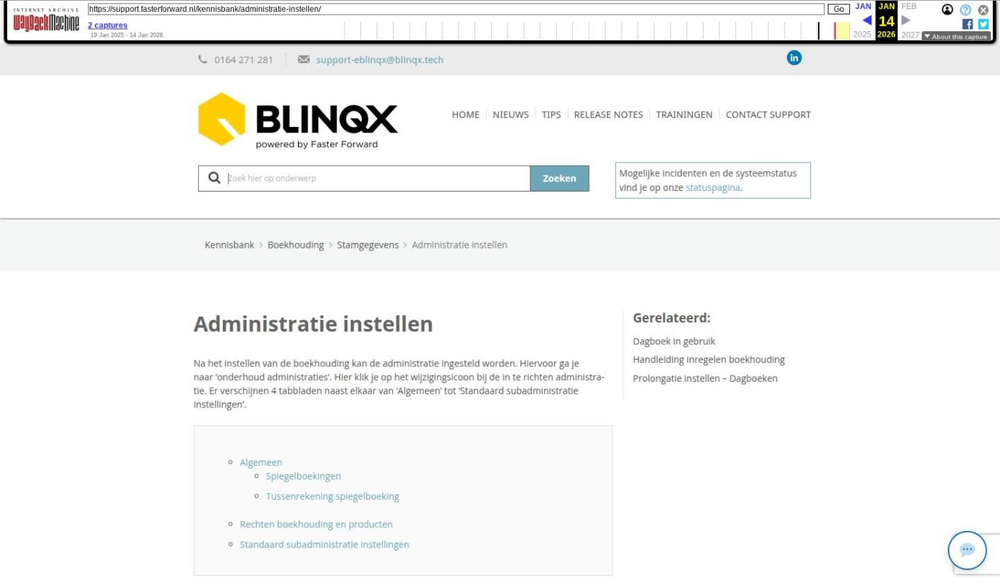

Administratie instellen

Tekstinhoud
Administratie instellen
Na het instellen van de boekhouding kan de administratie ingesteld worden. Hiervoor ga je naar 'onderhoud administraties'. Hier klik je op het wijzigingsicoon bij de in te richten administratie. Er verschijnen 4 tabbladen naast elkaar van 'Algemeen' tot 'Standaard subadministratie instellingen'.
Algemeen
Spiegelboekingen
Tussenrekening spiegelboeking
Rechten boekhouding en producten
Standaard subadministratie instellingen
Algemeen
Op het eerste tabblad algemeen dienen de volgende zaken ingesteld te worden.
FILTER OMSCHRIJVING MOGELIJKHEDEN
Naam De naam van de administratie. Deze wordt ook zichtbaar helemaal rechts bovenin het eBlinqx scherm. Zelf kiezen
Omschrijving De omschrijving van de administratie. Zelf kiezen
Template administratie Mag deze administratie gebruikt worden als basis voor nieuwe administraties Ja/Nee
Periode/datum controle Waarschuwing bij het niet vallen van de boekdatum binnen het huidige boekjaar. De optie "optioneel" geeft aan dat er een waarschuwing zal worden weergegeven indien dit het geval is. Deze waarschuwing kunt u eventueel negeren. Bij de optie "uit" is een boekdatum buiten het huidige boekjaar gewoon mogelijk en bij de optie "aan" is dit niet toegestaan.
Organisatie De organisatie waar deze administratie aan gekoppeld wordt. Dit kan slechts één organisatie zijn. Voor deelnemers/kantoren moeten dus aparte administraties aangemaakt worden als zij ook moeten kunnen boekhouden.
Systeem dagboek Dagboek waarin eBlinqx zelf prolongatie geautomatiseerd wegboekt. Alle dagboeken van type 'Systeem'
Systeem dagboek (Transitorische posten) Dagboek waarin transitorische posten worden weggeboekt Alle dagboeken van type 'Systeem'
Vooruit betaalde kosten
(Transitorische posten) Grootboekrekening waar vooruitbetaalde kosten op komen te staan bij gebruik van transitorische posten. Alle grootboeken van het type 'Kosten'
Vooruit betaalde omzet
(Transitorische posten Grootboekrekening waar vooruitbetaalde omzet op komt te staan bij gebruik van transitorische posten. Alle grootboeken van het type 'Omzet'
Kostenplaats Keuze of u gebruik wilt maken van kostenplaatsen bij het invoeren van boekingen. Ja/Nee; bij keuze "Ja" verschijnt er een extra kolom in de boekingsregel.
Kostendrager Keuze of u gebruik wilt maken van kostendragers bij het invoeren van boekingen. Ja/Nee; Bij keuze "Ja" verschijnt er een extra kolom in de boekingsregel.
Kostencategorie Keuze of u gebruik wilt maken van kostencategorie bij het invoeren van boekingen. Ja/Nee; Bij keuze "Ja" verschijnt er een extra kolom in de boekingsregel.
Kostencategorie Verplicht Met deze optie kunt u de kolom kostencategorie verplicht maken tijdens het boeken. Ja/Nee Bij keuze 'ja' verschijnt er een drop down waar de standaard kostencategorie gekozen kan worden. Deze kostencategorie wordt automatisch geselecteerd wanneer er openstaande posten in de rekening-courant van de deelnemer afgeboekt worden.
RC Maatschappij Default grootboekrekening voor RC maatschappij welke gebruikt wordt bij wegboeken van prolongatie. Alle grootboeken met als subadministratie ´RC Maatschappij´
RC Deelnemer Default grootboekrekening voor RC deelnemer welke gebruikt wordt bij wegboeken van prolongatie. Alle grootboeken met als subadministratie 'RC Deelnemer´
Onbekende betalingen Default grootboekrekening voor onbekende betalingen welke gebruikt wordt bij wegboeken van onbekende posten bij prolongatie. Alle grootboeken met als subadministratie 'Onbekende betalingen´
Grootboekrekening overige Default grootboekrekening voor "overige" welke gebruikt wordt bij wegboeken van het restantbedrag. Bijvoorbeeld € 100 vergoeding op grootboek RC maatschappijen waarvan € 80 naar grootboek RC deelnemers en € 20 naar grootboek omzet (overige). Alle grootboeken
Aantal dagen vooruit factureren Het aantal dagen voor de vergoedingsdatum dat de factuur (naar aanleiding van de vergoeding) automatisch mag worden aangemaakt door eBlinqx. Er staat bijvoorbeeld een (factuur) vergoeding onder een offerte met een vergoedingdatum van 14-01-2013. Indien het aantal dagen vooruit factureren op 14 wordt gezet wordt de factuur automatisch door eBlinqx aangemaakt middernacht op 01-01-2013. Aantal dagen
Spiegelboekingen Het instellen van spiegelboekingen zal hieronder apart behandeld worden in verband met de complexiteit.
Spiegelboekingen
Spiegelboekingen kunnen worden gebruikt voor het "gespiegeld" boeken van bedragen uit de Centrale Organisatie administratie in de deelnemer administratie. Indien deze functionaliteit gebruikt gaat worden dient er rekening mee gehouden te worden dat het proces 's nachts draait. Een boeking aangemaakt op 23 februari wordt in de nacht van 23 op 24 februari gespiegeld aangemaakt in de deelnemeradministratie. Je dient contact op te nemen met support om dit proces eenmalig aan te laten zetten, dit staat standaard uit!
De instellingen van spiegelboekingen kunnen verdeeld worden in 2 onderdelen; het gedeelte wat ingesteld wordt in de deelnemer administratie (zie het rode gedeelte met de 1) en het gedeelte wat ingesteld wordt in de Centrale Organisatie administratie (zie het blauwe gedeelte met de 2).
In de Centrale Organisatie administratie geef je aan welke dagboeken er gespiegeld dienen te worden (zie blauwe gedeelte met de 2).
Vervolgens geef je in elke deelnemer-administratie aan dat je de optie spiegelboeking wilt gebruiken (Spiegelboeking activeren). Daarna geef je een dagboek aan bij "Systeem dagboek", in dit dagboek komen de boekingen te staan. Vervolgens geef je de grootboekrekening aan die gebruikt dient te worden voor de rekening courant maatschappijen. Let op: bij een RC verhouding tussen CO en deelnemer is de CO voor de deelnemer de "maatschappij". Dit kan inhouden dat hier de grootboekrekening voor de RC verhouding met de CO moet komen te staan. Dan geef je de "Grootboekrekening omzet" op. Ten slotte vul je de 'grootboekrekening kostencategorie' in.
Tussenrekening spiegelboeking
Het kwam voor dat bij een uitbetaling van een centrale organisatie aan een deelnemer nogmaals de omzet werd geboekt. Om dit te voorkomen is het mogelijk om een tussenrekening voor een spiegelboeking in te stellen. Hiermee wordt de rekening courant uitbetaald. Er wordt dan dus alleen nog maar omzet geboekt op de grootboekrekening bij het boeken van de factuur en niet nogmaals bij het daadwerkelijk uitbetalen aan de deelnemer.
Instellen
Deze grootboekrekening moet je als centrale organisatie zelf instellen bij 'Onderhoud administraties' -> 'Spiegelboekingen'. Bij 'Kostencategorie voor uitbetalingen' geef je aan op welke kruispost er moet worden geboekt.
Rechten boekhouding en producten
Onder het 2e en 3e tabblad bovenaan het scherm vinden we 'Rechten boekhouding' en 'Rechten producten'. In dit scherm kan worden aangegeven welke rechtengroepen toegang hebben tot de boekhouding en producten van deze administratie.
Standaard subadministratie instellingen
Onder het 4e tabblad bovenaan het scherm vind je 'Standaard subadministratie instellingen'. Het instellen van de facturatie dient gedaan te worden per administratie. Wanneer je meer dan één administratie hebt, dien je de instellingen dan ook te doen per administratie, indien in elke administratie verschillende producten gebruikt worden. Wanneer alle administraties gebruik maken van de producten van één administratie, behoeft alleen die administratie ingesteld te worden.
Bij de oplevering van iedere eBlinqxomgeving wordt deze standaard voorzien van de correcte instellingen. Het advies is om deze instellingen niet aan te passen, de facturatie zal namelijk correct verlopen met de vooraf ingestelde gegevens.
Laatste update: 15 oktober 2025
Was deze informatie nuttig?
Ja Nee